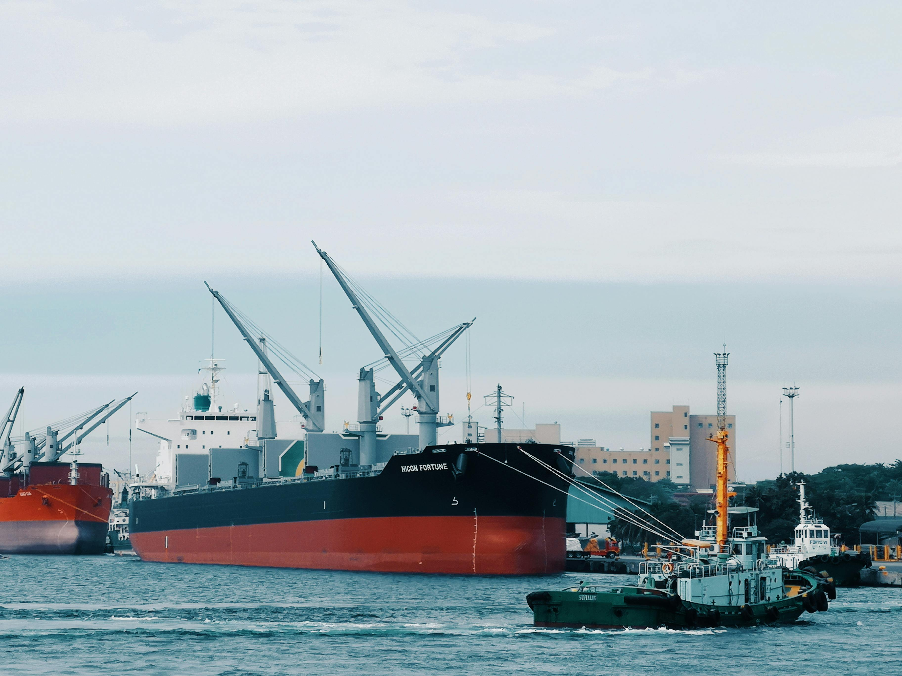
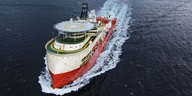
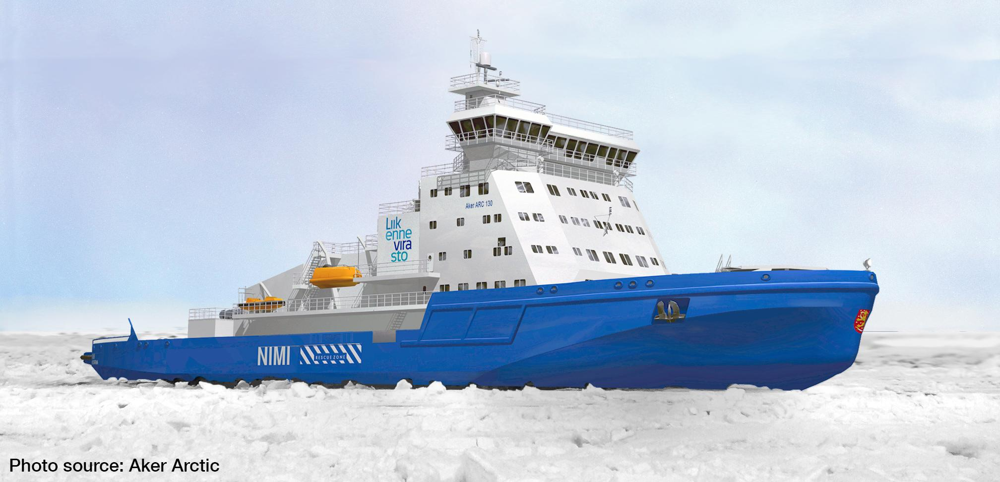
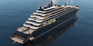
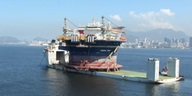
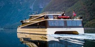

MARINE ELECTRICAL & AUTOMATION
“全方位”海事电气服务 供应 · 安全 · 工程 · 技术
南通睦融电气设备有限公司（MURONG）深耕海事电气与自动化技术服务，围绕现场测量、故障定位、维修调试和技术交付，为船舶设备恢复可靠运行提供支持。
OUR CORE VALUES
守正至诚
极致履责
同舟共济
锐意破壁
聚焦船舶自动化设备维修，覆盖主机遥控、报警监测、液位遥测、阀门控制与电站管理等系统；结合船期协调登轮检测、故障修复、调试验证与技术交付。
MARINE ELECTRICAL & AUTOMATION
南通睦融电气设备有限公司（MURONG）深耕海事电气与自动化技术服务，围绕现场测量、故障定位、维修调试和技术交付，为船舶设备恢复可靠运行提供支持。
OUR CORE VALUES

根据故障现象、设备型号、船期和靠港地点确认服务范围；复杂问题先依据图纸、报警与实测数据缩小故障范围。
根据船舶电力参数与靠港用电条件，提供高低压岸电系统方案、设备安装、并网调试及保护功能测试。
了解更多 >覆盖主机遥控、液位监测、阀门遥控及电站管理系统，通过电源、I/O、通信与控制逻辑测量定位故障并完成维修验证。
了解更多根据设备品牌、型号、铭牌和旧件照片协助核对电子元器件、传感器及控制板卡，并提供选型与替换建议。
了解更多面向靠港时间紧、故障信息不完整的现场场景，以测量数据为依据，从供电、信号、控制逻辑到执行机构逐级排查。
熟悉机舱与驾驶台设备的现场排查节奏。到船即测，结合报警、图纸与实测信号缩小故障范围，快速定位疑难问题。
常备仪器覆盖绝缘、电压电流、波形与模拟信号检测，可在船快速复现和验证控制回路状态。
修后提供故障排查记录与技术交付报告，说明检测数据、处置内容、调试结果及后续建议，便于机务留档与复盘。
从信息确认到修后报告，每一步均围绕现场时间窗口、故障依据与可复核的交付结果展开。
确认船期、港口、故障现象和设备范围，提前准备图纸、仪器与可能需要的备件。
核对报警与运行状态，分段测量电源、输入输出和现场信号，形成清晰的故障边界。
根据测量结果实施修复、参数调整或部件更换，并在真实工况下完成联动与报警验证。
记录故障原因、测量结果、维修内容与验证结论，为机务复核和后续维护提供依据。
我们为各种船舶类型提供专业的电气与自动化解决方案，以下是其中一部分。南通睦融电气提供从内通导航到动力环保、从船舶监测到高低压岸电改造的全面技术保障。了解我们如何为不同类型的船舶实现更安全、更智能、更可持续的运营。






面向主机遥控、电站管理、液位遥测、阀门控制及报警监测等系统，技术团队依据图纸、报警记录与现场测量结果逐级排查，完成板卡、回路与控制逻辑的故障定位和维修验证。

针对动力控制与电力分配系统，检查供电质量、控制回路、输入输出信号与保护逻辑，并根据测量结果实施板卡维修、参数调整或部件更换。

内部通信与外部导航是保障船舶安全的神经中枢。我们提供全套驾驶台导航仪器报警、对讲及各类信号灯系统的深度排障与检修。

针对液位遥测、15PPM 油份浓度、火警及货舱报警系统，逐项检查传感器、线路、控制模块与报警输出，并通过模拟信号和联动测试验证修复结果。

覆盖全船的重型机械物理执行层，提供液压控制系统、起重设备及各类阀门自控系统的专业检修与模块更换。


南通睦融电气设备有限公司（MURONG） 是一家专注海事电气与自动化的技术服务企业，为靠港船舶提供故障排查、维修调试、岸电改造与备件技术支持。
团队拥有 15 年一线船舶电气与自动化排查经验，在内部通信、导航报警、液位监测、动力与环保系统等领域积累了大量现场测量、故障隔离和调试验证经验。
深耕船舶行业
测量数据辅助判断
维修结果可复核
立足南通，覆盖上海、舟山、靖江、南京、张家港、南通及泰州等长三角主要港口，根据船期、泊位与人员安排确认登轮窗口。
围绕内通、报警、液位、阀门遥控、电站管理及环保设备，从供电、I/O、通信和控制逻辑逐级测量，减少无依据换件。
可依据英文图纸、报警信息和设备资料开展沟通与排查，并在服务前确认船舶信息、故障范围和现场配合条件。
配合机务、船员和相关服务方确认技术条件；修后整理检测数据、处置内容与验证结论，便于后续维护与复盘。
敬畏底线，言出必行。做经得起时间与风浪检验的靠谱团队。
拒绝妥协，捍卫安全。把每一次登船排障，都做到无可挑剔。
彼此成就，谋求长远。用极度的专业协同，构筑最坚实的信任壁垒。
拥抱变革，持续迭代。用前沿的技术进化，破解每一次未知挑战。
团队立足南通，服务范围覆盖上海、舟山、靖江、南京、张家港、南通、泰州等长三角主要港口，可结合船期与泊位计划协调登轮支持。
在逆境中锤炼韧性，在实战中超越自我。不满足于“修好”，更执着于“极致”。

无论是紧急维修还是常规保养，我们的工程师已准备就绪。
江苏省南通市通州区五街镇南通睦融电气设备有限公司
+86 156 8211 2719
hmm@rongelec.com